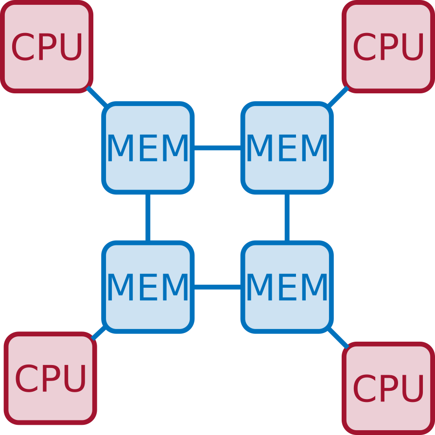
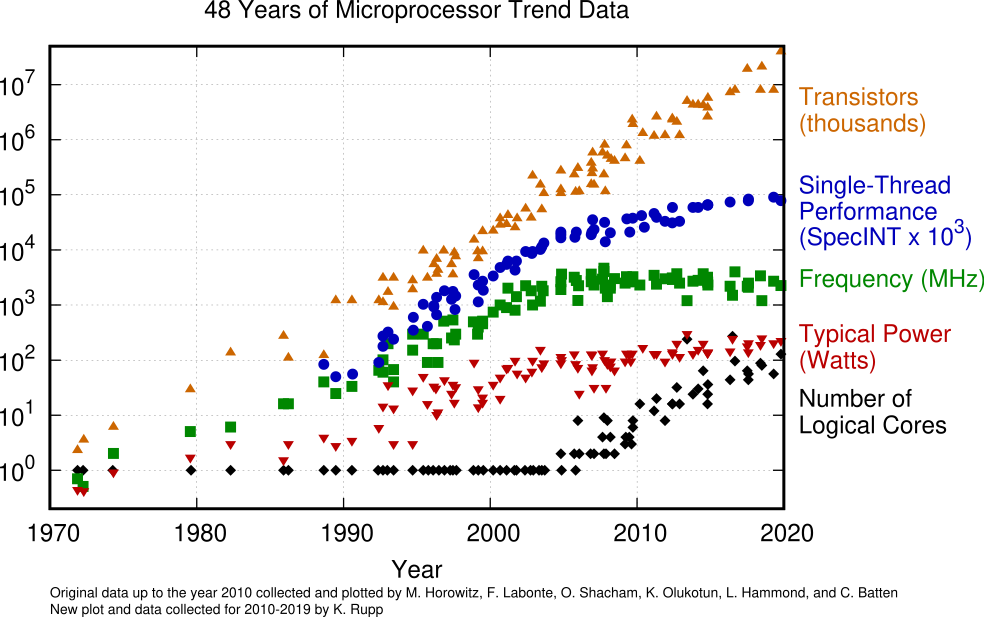
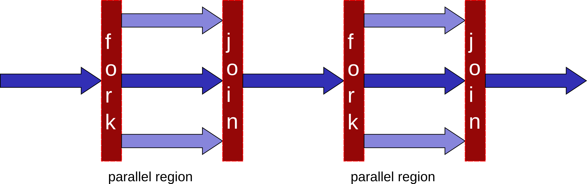
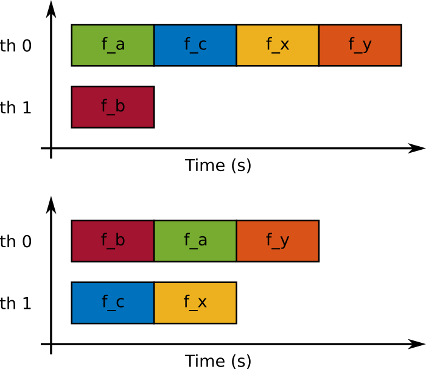

OpenMP programming course
Table of Contents
- 1. How to use this document
- 2. Introduction
- 3. The OpenMP standard
- 4. Parallel region
- 4.1. Parallel region directive syntax
- 4.2. A simple hello world example in OpenMP
- 4.3. A slightly more complex hello world example in OpenMP
- 4.4. Parallel region: how many threads?
- 4.5. Parallel region: how many threads?
- 4.6. Hello world with a bug
- 4.7. Data sharing 1/2
- 4.8. Data sharing 2/2
- 4.9. Hello world bugfix
- 5. Work distribution and sharing
- 6. Threads synchronization
- 7. Tasks
- 8. Locks
- 9. Aux code
1 How to use this document
1.1 What is org-mode
This is org-mode document. Org-mode is a markup language which allows to write text documents containing executable code blocks.
Org-mode can do much more than this and you can find out more here.
Org-mode works in emacs (the best editor in the world).
1.2 Code blocks
You can do two things with code blocks (besides simply reading them):
- execute: this can be done using the
C-c C-c(Ctrl-c Ctrl-c) keybinding. The stdout of the code will be appended below the code block itself - tangle: tangling a code block means creating a separate file that contains the code which can
thus be compiled and run as usual. If you hit
C-c C-v C-t(this call the emacs functionorg-babel-tangle) all the code blocks in this file will be tangled. If, instead, you only want to tangle a single code blocks, go to that block and hitC-u C-c C-v C-t
1.3 Compiling and running a tangled code block
Once you have tangled a code block, you can compile and run it like any other code. For the code blocks of this document to work, you have to use the following compile command:
gcc -fopenmp -I. aux.c code_block.c -o code_block
And then you can run it by launching the code_block executable
./code_block
1.4 Some other useful tricks
- Set an environment variable: in order to set an environment variable within emacs you have to
hit
M-x setenvthen write the name of the variable, hit enter, write its value and hit enter again - Refresh images in an org-mode document: if images don't show up, use the command
M-x org-redisplay-inline-images - Show this document as a presentation: to show this document as a sequence of slides, you must
install the emacs
org-tree-slidepackage. Then open the document and execute the commandM-x org-tree-slide-mode. You can mode forward and backward using the>and<keys - Export and org-mode document: Org-mode lets you export org-mode documents in various formats
such as pdf or html. Just hit
C-c C-eand follow the instructions.
2 Introduction
2.1 Parallel computer architectures

Roughly speaking, parallel computers can be classified into two types:
- Shared memory: all the CPUs share one (logical) memory, i.e., all processes can access the same addressing space regardless of the CPU they are running on. This makes it simple to communicate data from one process to another
- Distributed memory: the computer is actually formed of multiple node, each having one or more CPUs and its own memory. Nodes are connected through a network. A process running on one node can only access data on the local memory; therefore, if it needs data that is on another node, a message must be exchanged through the network
2.2 Shared memory: SMP vs NUMA
One "logical memory" does not necessarily mean that only one physical memory exists. If multiple memory modules exist, access to data may non-uniform
- Symmetric Multi-Processor (SMP): all CPUs can access to all data with the same bandwidth and latency
- Non-Uniform Memory Access (NUMA): all CPUs can access to all data but bandwidth and latency depends on where the data is placed

Both types of shared-memory architectures can be programmed using the same tools and technologies. When performance is a concern, though, special care must be taken for NUMA machines (we will not cover in this course)
2.3 Multicore processors: why?
Until the early 00's all processors had only one core (in fact we did not use the word "core" at all). Then why have multicore processors become ubiquitous? Energy consumption is the reason why:
\(P=CV^2f\)
however there is a linear dependence between \(f\) and \(V\), therefore \(P\) grows as the cube of \(f\)!!!
Because the performance of single-core processors could only be improved by increasing the frequency, this trend became unsustainable.
Multicore processors design relies on Thread Level Parallelism to improve performance. This means that more transistors are used to assemble multiple execution units (i.e., cores) on a single chip. This improves performance with only a linear increase in the energy consumption: the capacitance \(C\) grows because of the increased number of transistors.
In fact, it is also possible to produce faster processors which consume less energy!!! Consider a quad-core processor with frequency \(0.6f\): it will be 2.4 times faster and consume roughly 15\% less energy
2.4 Multicore processors: why?

2.5 Multicore architecture
Multicore computer: what does it look like?
The hwloc library is designed to retrieve all the details of the architecture. For example, on my
computer, I can run the lstopo program from hwloc to retrieve the architecture:
lstopo --of png
2.6 How to program multicore computers?
Many options exist, but they are not all simple, portable, efficient etc.
Examples:
- pThreads (POSIX Threads): difficult to use and debug, not fully portable
- Intel TBB/OneAPI: proprietary
- Cilk: limited support and portability
- OpenMP: extremely portable, efficient, relatively easy to use. huge community and support
3 The OpenMP standard
3.1 Basic ideas and components

OpenMP (Open specifications for MultiProcessing) is an Application Program Interface (API) to explicitly direct multi-threaded, shared memory parallelism.
- First standard 1.0 was published in 1997
- Latest standard is 5.2 published in November 2021
- Many resources at https://www.openmp.org
The OpenMP standard is developed by an advisory board that includes many members from academia (UTK, LBNL, ANL, NASA,…) and industry (Intel, AMD, NEC, Fujitsu, NVIDIA,…)
3.2 Basic ideas and components

- OpenMP is Comprised of three primary API components:
- Language directives
- Runtime library routines
- Environment variables
- Portable:
- Specifications for C/C++ and Fortran
- Already available on many systems (including Linux, Win, IBM, SGI etc.)
3.3 Disclaimer

This course does not cover the whole OpenMP standard. The OpenMP manual is over 600 pages as of today (v5.2)
Only a subset of constructs and clauses will be presented.
Tons of tutorials can be found online but better be used with moderation.
3.4 Fork-join execution model
OpenMP is based on a fork-join execution model:

- Execution is started by a single thread called master thread
- when a parallel region is encountered, the master thread spawns a set of threads
- the set of instructions enclosed in a parallel region is executed
- at the end of the parallel region all the threads synchronize and terminate leaving only the master
4 Parallel region
4.1 Parallel region directive syntax
#pragma omp parallel [clause]
if (scalar or logical expression)
private(list)
firstprivate(list)
shared(list)
default(private | shared | none)
reduction(operator:list)
num_threads(scalar integer expression)
{
/* Structured code block */
}
- The master is a member of the team and has thread number 0
- Starting from the beginning of the region, the code is duplicated and all threads will execute that code.
- There is an implied barrier at the end of a parallel section.
- If any thread terminates within a parallel region, all threads in the team will terminate.
4.2 A simple hello world example in OpenMP
Just a simple hello world with multiple threads:
- start with serial execution
- open a parallel region where:
- each thread prints a message
#pragma omp parallel { printf("Hello world!\n"); }
4.3 A slightly more complex hello world example in OpenMP
Just a simple hello world with multiple threads:
- start with serial execution
- open a parallel region where:
- each thread reads its identifier and the total number of threads using, respectively, the
omp_get_thread_num()andomp_get_num_threads() - prints a message
- each thread reads its identifier and the total number of threads using, respectively, the
#pragma omp parallel { printf("Hello world from thread %2d in a pool of %2d.\n", omp_get_thread_num(), omp_get_num_threads()); }
4.4 Parallel region: how many threads?
How many threads do we have in the parallel regions of a code? The number of threads depends on:
- Evaluation of the
ifclause (one or many) - Setting of the
num_threadsclause - Use of the
omp_set_num_threads()library function - Setting of the
OMP_NUM_THREADSenvironment variable - Implementation default - usually the number of CPUs on a node, though it could be dynamic
4.5 Parallel region: how many threads?
Complete example
int iam, nth, n=4; #pragma omp parallel { printf("Region 1 thread %2d / %2d.\n", omp_get_thread_num(), omp_get_num_threads()); } omp_set_num_threads(n); #pragma omp parallel { printf("Region 2 thread %2d / %2d.\n", omp_get_thread_num(), omp_get_num_threads()); } #pragma omp parallel num_threads(2) { printf("Region 3 thread %2d / %2d.\n", omp_get_thread_num(), omp_get_num_threads()); } #pragma omp parallel if(n<5) { printf("Region 4 thread %2d / %2d.\n", omp_get_thread_num(), omp_get_num_threads()); }
4.6 Hello world with a bug
Here is a minor variant of the hello world program…with a bug
int iam, nth; #pragma omp parallel { iam = omp_get_thread_num(); nth = omp_get_num_threads(); do_stuff(1); printf("Hello world from thread %d in a pool of %2d.\n", iam, nth); }
4.7 Data sharing 1/2
- Most variables are shared by default
- Global variables include:
- Fortran: COMMON blocks, SAVE and MODULE variables
- C: File scope variables, static
- Private variables include:
- Loop index variables (in !$OMP DO) constructs
- Stack variables in subroutines called from parallel regions
- Fortran: Automatic variables within a statement block
- The OpenMP Data Scope Attribute Clauses are used to explicitly define how variables should be
scoped. They include:
privatefirstprivateshareddefaultreduction
4.8 Data sharing 2/2
private(list): a new object of the same type is created for each thread (uninitialized!)firstprivate(list): Listed variables are initialized according to the value of their original objects prior to entry into the parallel or work-sharing construct.lastprivate(list): The value copied back into the original variable object is obtained from the last (sequentially) iteration or section of the enclosing construct.shared(list): only one object exists in memory and all the threads access itdefault(shared|private|none): sets the default scopingreduction(operator:list): performs a reduction on the variables that appear in its list.
4.9 Hello world bugfix
Let's fix the bug: by declaring iam private, each thread will have its own copy of this
variable
int iam, nth; #pragma omp parallel private(iam) { iam = omp_get_thread_num(); nth = omp_get_num_threads(); do_stuff(1); printf("Hello world from thread %d in a pool of %2d.\n", iam, nth); }
5 Work distribution and sharing
5.1 Dependencies
5.1.1 Dependencies
The interest of parallel programming is not to execute the same workload multiple times but to distribute the workload to the available processes so that execution time can be reduced. This implies that multiple instructions will be executed concurrently (or, equivalently, in parallel).
Two successive statements S1 and S2 can be executed concurrently if they are independent. According to the Bernstein conditions there exist three types of dependencies:
- Read-After-Write or true dependency or flow dependency: if
Input(S2)overlaps withOutput(S1) - Write-After-Read or anti-dependency: if
Output(S2)overlaps withInput(S1) - Write-After-Write or output dependency: if
Output(S2)overlaps withOutput(S1)
5.1.2 Dependencies
Example. Are these two statements independent?
a = b+c; e = d+a;
What kind of dependency is there? RAW. Here is a more convoluted example
for(i=1; i<n; i++) x[i] += x[i-1];
5.1.3 Dependencies
Example. Are these two statements independent?
a = b+c; b = c*2;
What kind of dependency is there? WAR. Note that WAR dependencies can be sometimes removed!
d = b; a = d+c; b = c*2;
Now the second and third statement have become independent. Here is a more convoluted example
for(i=0; i<n-1; i++) x[i] += x[i+1];
5.1.4 Dependencies
Example. Are these two statements independent?
c = a+b; c = 2;
What kind of dependency is there? WAW. Here is a more convoluted example
for(i=0; i<n; i++)
c += x[i];
5.2 Master
The master directive identifies a code block which is only executed
by the master thread
int iam; #pragma omp parallel private(iam) { iam = omp_get_thread_num(); #pragma omp master { do_stuff(0.1); printf(" ---> This is only done by: %2d\n",iam); } printf(" This is also done by: %2d.\n",iam); }
5.3 Single
The single directive identifies a code block which is only executed
by one (any) thread
int iam; #pragma omp parallel private(iam) { iam = omp_get_thread_num(); #pragma omp single { do_stuff(0.1); printf(" ---> This is only done by: %2d\n",iam); } printf(" This is also done by: %2d.\n",iam); }
5.4 Single vs master
One obvious difference between single and master is that with master only the thread with
id 0 can execute the code block. This has a risk: you have to make sure that the master thread
passes by that code block otherwise it will never be executed.
Can you spot any other difference from executing the two code blocks above? There is an implied
barrier at the end of the single block. It can be removed using the nowait clause
int iam; #pragma omp parallel private(iam) { iam = omp_get_thread_num(); #pragma omp single nowait { do_stuff(0.1); printf(" ---> This is only done by: %2d\n",iam); } printf(" This is also done by: %2d.\n",iam); }
5.5 Parallel loops
5.5.1 Parallel
In the code below, all the iterations in the loop are independent. This means that they can be executed concurrently. However the code below is wrong because it does not produce the same result as in sequential
int i, n=4; int a[n], b[n], c[n]; #pragma omp parallel private(i) { for (i=0; i<n; i++) { printf("Thread %2d does iteration %2d\n",omp_get_thread_num(),i); a[i] += b[i]+c[i]; } }
5.5.2 Parallel
OpenMP provides a construct that automatically parallelizes loops by executing chunks of
iterations concurrently. Note that the loop index i is implicitly private.
int i, n=4; int a[n], b[n], c[n]; #pragma omp parallel { #pragma omp for for (i=0; i<n; i++) { printf("Thread %2d does iteration %2d\n",omp_get_thread_num(),i); a[i] += b[i]+c[i]; } }
5.5.3 Schedule
The schedule clause in the for construct specifies how the iterations of the loop are
assigned to threads:
static: loop iterations are divided into pieces of size chunk and then statically assigned to threads in a round-robin fashiondynamic: loop iterations are divided into pieces of size chunk, and dynamically scheduled among the threads; when a thread finishes one chunk, it is dynamically assigned anotherguided: for a chunk size of 1, the size of each chunk is proportional to the number of unassigned iterations divided by the number of threads, decreasing to 1. For a chunk size with value k (greater than 1), the size of each chunk is determined in the same way with the restriction that the chunks do not contain fewer than k iterationsruntime: The scheduling decision is deferred until runtime by the environment variable OMP SCHEDULE
5.5.4 Schedule
Let's see how schedule works:
int i; #pragma omp parallel for schedule(static,25) for (i=0; i<400; i++) printf("%3d %2d\n",i,omp_get_thread_num());
6 Threads synchronization
6.1 Barriers
6.1.1 Barrier
A barrier is simply a waiting point: all threads must wait for all the others to reach a barrier point before moving on. Example
int iam; double t=secs(); #pragma omp parallel private(iam) { iam = omp_get_thread_num(); if(iam==0){ do_stuff(0.5); // 0.5 seconds } else { do_stuff(0.3); // 0.3 seconds } #pragma omp barrier printf("Thread %2d reached this point at time %f.\n",iam,secs()-t); }
6.1.2 Barrier
Improper use of barriers can cause deadlocks: if not all threads pass by the barrier, those who do will be waiting forever…
int iam; double t=secs(); #pragma omp parallel private(iam) { iam = omp_get_thread_num(); if(iam==0){ do_stuff(0.5); } else { do_stuff(0.3); #pragma omp barrier } printf("Thread %2d reached this point at time %f.\n",iam,secs()-t); }
6.2 Critical sections
6.2.1 Critical
The critical directive identifies a code block which is executed in mutual exclusion by all
threads, i.e., one at a time.
int iam; double t=secs(); #pragma omp parallel private(iam) { iam = omp_get_thread_num(); #pragma omp critical { do_stuff(0.1); printf("This is done by %2d at time %f\n",iam, secs()-t); } }
6.2.2 Critical scope
Critical sections can have names. The name argument is used to identify the critical construct. For any critical construct for which name is not specified, the effect is as if an identical (unspecified) name was specified. It is not possible to have two or more threads in different critical regions that have the same name!
int iam; double t=secs(); #pragma omp parallel private(iam) { iam = omp_get_thread_num(); #pragma omp critical (toti) { do_stuff(0.1); printf("First is done by %2d at time %f\n",iam, secs()-t); } #pragma omp critical (toto) { do_stuff(0.1); printf("Second is done by %2d at time %f\n",iam, secs()-t); } }
6.3 Atomic instructions
6.3.1 Atomic
The atomic construct ensures that a specific storage location is accessed atomically so that
possible simultaneous reads and writes by multiple threads do not result in indeterminate
values. Five types of atomic constructs exist: read, write, update, capture and
compare
read: atomically read a memory location, i.e.,xcan not change while being read
int x, v; #pragma omp parallel { #pragma atomic read v = x; }
6.3.2 Atomic
write: atomically write a memory locationupdate: atomically update (i.e. read-modify-write) a memory location
So what's the interest of atomic? take this example: we could certainly use critical to
protect the update of x[] but this would prevent calls to compute_one to be executed
concurrently. With atomic only the update of x[] is serialized.
double t_start=secs(), t_end; int i, n=100, m=5, tot=0, x[5]={0,0,0,0,0}; #pragma omp parallel for for(i=0; i<n; i++){ #pragma omp atomic update x[rnd_int()%m] += compute_one(0.01); } t_end = secs()-t_start; for(i=0; i<m; i++) tot += x[i]; printf("\nTot:%10d time:%f\n",tot, t_end);
6.3.3 Atomic
capture: atomically update a memory location and capture its initial or final value
int x, v, y, w; #pragma omp parallel { /* Capture initial value */ #pragma atomic capture v = x++; /* Capture final value */ #pragma atomic capture w = ++y; }
6.3.4 Atomic
compare: atomically and conditionally update a memory location
int i, n=1000, min=99999999; int x[n]; rand_fill(x, n); #pragma omp parallel for for(i=0; i<n; i++){ #pragma omp atomic compare if (x[i] < min) { min = x[i]; } } printf("Min is %d\n",min);
6.4 Reductions
6.4.1 Reductions
Assume this simple code that computes the sum of all the elements of an array
int i, sum, n=1000; int x[n]; rand_fill(x, n); sum=0; for(i=0; i<n; i++){ sum += x[i]; } printf("Sum is %d\n",sum);
The iterations of this loop are clearly dependent because of the updates on sum. We could
actually use a critical section or an atomic update but we would loose all performance.
6.4.2 Reductions
Reductions allow us to take advantage of associativity and commutativity of some operators (+ in this case):
int i, sum, n=1000; int x[n]; rand_fill(x, n); sum=0; #pragma omp parallel for reduction(+:sum) for(i=0; i<n; i++){ sum += x[i]; } printf("Sum is %d\n",sum);
The reduction clause specifies an operator and one or more list items. For each list item, a private copy is created in each implicit task, and is initialized appropriately for the operator. After the end of the region, the original list item is updated with the values of the private copies using the specified operator.
6.4.3 Reductions
For the C language, predefined reduction operators are (note that : in the table below is
actually a | )
| Operator | Initializer | Combiner |
|---|---|---|
| + | omppriv=0 | ompout += ompin |
| * | omppriv=1 | ompout *= ompin |
| ~ | omppriv=~0 | ompout ~= ompin |
| : | omppriv=0 | ompout := ompin |
| ^ | omppriv=0 | ompout ^= ompin |
| && | omppriv=1 | ompout = ompin && ompout |
| :: | omppriv=0 | ompout = ompin :: ompout |
| max | omppriv=minval | ompout = max(ompin,ompout) |
| min | omppriv=maxval | ompout = min(ompin,ompout) |
7 Tasks
7.1 Task
The OpenMP task construct simply identifies a block of code which is ready to be executed and
whose execution is deferred. Once the task is created, it can be executed by any thread, at
any time. This means that we can not make any assumptions on when a task is executed and by
which thread and in which order all the created tasks are executed.
#pragma omp parallel { #pragma omp master { #pragma omp task printf("Thead %2d does task 1\n",omp_get_thread_num()); #pragma omp task printf("Thead %2d does task 2\n",omp_get_thread_num()); #pragma omp task printf("Thead %2d does task 3\n",omp_get_thread_num()); #pragma omp task printf("Thead %2d does task 4\n",omp_get_thread_num()); } }
Why do we need the master construct in the code above?
7.2 Task data
A slightly more complex example, with a bug:
int i; printf("Hello %p\n",&i); #pragma omp parallel { #pragma omp master { for(i=0; i<6; i++) { #pragma omp task printf("Thread %d iteration: %d\n", omp_get_thread_num(), i); } } }
What went wrong?
7.3 Task data
The value of shared variables accessed within a task might change between the creation of the task and its actual execution. Some clauses can be used to define the scope of variables within tasks:
shared(x)means that when the task is executed x is the same variable (the same memory location) as when the task was createdfirstprivate(x)means that x is private to the task, i.e., when the task is created, a brand new variable x is created as well and its value is set to be the same as the value of x in the enclosing context at the moment when the task is created. This new copy is destroyed when the task is finishedprivate(x)means that x is private to the task, i.e., when the task is created, a brand new variable x is created as well. This new copy is destroyed when the task is finished
If a variable is private in the parallel region it is implicitly firstprivate in the included
tasks
7.4 Task data
A slightly more complex example, with a bugfix:
int i; printf("Hello %p\n",&i); #pragma omp parallel { #pragma omp master { for(i=0; i<6; i++) { #pragma omp task firstprivate(i) printf("Thread %d iteration: %d\n", omp_get_thread_num(), i); } } }
7.5 Task if
Creating and handling tasks has a cost. Therefore, it is not always worth creating a task, for
example, if the task has only little work to do. The if clause can be used to choose whether to
create a task or immediately run the code block
double w=0.4; #pragma omp parallel { #pragma omp master { #pragma omp task printf("Thread %d executes this first task\n", omp_get_thread_num()); #pragma omp task if(w>0.4) { do_stuff(w); printf("Thread %d executes this second task\n", omp_get_thread_num()); } } }
7.6 Taskwait
So how can we be sure that some tasks are actually executed? The taskwait directive ensures
that all the previously submitted tasks have been executed. Note that this does not include
descendants, i.e., tasks that have been generated by other tasks.
int x, y, z; #pragma omp parallel { #pragma omp master { #pragma omp task x = compute_one(0.2); #pragma omp task y = compute_one(0.2); #pragma omp taskwait z = x+y; printf("z is %d\n", z); } }
7.7 Task dependencies
It is possible to define an execution order by specifying task dependencies. This is done
through the depend clause and the Bernstein conditions:
- The
independence-type. The generated task will be a dependent task of all previously generated sibling tasks that reference at least one of the list items in anoutorinoutdependence-type list. - The
outandinoutdependence-types. The generated task will be a dependent task of all previously generated sibling tasks that reference at least one of the list items in anin,out, orinoutdependence-type list.
7.8 Task dependencies
Example:
int a, b, c, x, y; double t=secs(); #pragma omp parallel { #pragma omp master { #pragma omp task depend(out:a) a = f_a(); #pragma omp task depend(out:b) b = f_b(); #pragma omp task depend(out:c) c = f_c(); #pragma omp task depend(in:b,c) depend(out:x) x = f_x(b, c); #pragma omp task depend(in:a,x) depend(out:y) y = f_y(a, x); #pragma omp taskwait printf("y: %d (correct value is 9) and time is %f\n",y,secs()-t); } }
Can you draw the dependency graph?
7.9 Task priorities
Assuming only two threads are available and all functions take one second, the following two schedulings are possible.

7.10 Task priorities
The priority clause can be used to give the OpenMP scheduler a hint on the importance of a task
int a, b, c, x, y; double t=secs(); #pragma omp parallel { #pragma omp master { #pragma omp task depend(out:b) priority(2) b = f_b(); #pragma omp task depend(out:c) priority(2) c = f_c(); #pragma omp task depend(out:a) a = f_a(); #pragma omp task depend(in:b,c) depend(out:x) x = f_x(b, c); #pragma omp task depend(in:a,x) depend(out:y) y = f_y(a, x); #pragma omp taskwait printf("y: %d (correct value is 9) and time is %f\n",y,secs()-t); } }
7.11 Task dependencies and pointers
When using pointers to specify dependencies, you should dereference it to make sure the dependence is inferred from the pointed data rather than the pointer variable.
int x[2]={0,0}; int *p=x; double t=secs(); #pragma omp parallel { #pragma omp master { #pragma omp task firstprivate(p) depend(out:*p) *p = compute_one(1.0); p+=1; #pragma omp task firstprivate(p) depend(out:*p) *p = compute_one(1.0); #pragma omp taskwait printf("x: {%d,%d} (correct value is {1,1}) and time is %f\n",x[0],x[1],secs()-t); } }
8 Locks
8.1 Locks
A lock is a data of type omp_lock_t which can be used to prevent simultaneous access to shared
resources according to the schema
- acquire (or set or lock) the lock
- access data
- release (on unset or unlock) the lock
Acquisition of the lock is exclusive in the sense that only one threads can hold the lock at a given time. A lock can be in one of the following states:
- uninitialized: the lock is not active and cannot be acquired/released by any thread;
- unlocked: the lock has been initialized and can be acquired by any thread;
- locked: the lock has been acquired by one thread and cannot be acquired by any other thread until the owner releases it.
8.2 Locks
Transitions through states can be achieved with the following routines
omp_init_lock: initializes a lockomp_destroy_lock: uninitializes a lockomp_set_lock: waits until a lock is available, and then sets itomp_unset_lock: unsets a lockomp_test_lock: tests a lock, and sets it if it is available
8.3 Locks
Example
omp_lock_t lock; omp_init_lock(&lock); #pragma omp parallel { omp_set_lock(&lock); printf("%d: It's my turn to use the resource\n",omp_get_thread_num()); use_resource(); omp_unset_lock(&lock); } omp_destroy_lock(&lock);
8.4 Locks
Example with test lock
omp_lock_t lock; omp_init_lock(&lock); #pragma omp parallel { while(!omp_test_lock(&lock)){ /* if lock is already locked, I do some other useful stuff */ printf("%d: lock is busy, I do some stuff\n",omp_get_thread_num()); do_stuff(0.5); } printf("%d: It's my turn to use the resource\n",omp_get_thread_num()); use_resource(); omp_unset_lock(&lock); } omp_destroy_lock(&lock);
9 Aux code
int seed=-1; #pragma omp threadprivate(seed) int rnd_int() { // & 0x7fffffff is equivalent to modulo with RNG_MOD = 2^31 #if defined(_OPENMP) if(seed==-1) seed = omp_get_thread_num()+1; #else if(seed==-1) seed = 1; #endif return (seed = (seed * 1103515245 + 12345) & 0x7fffffff); } void rand_fill(int *x, int n){ int i; for(i=0; i<n; i++){ x[i]=rnd_int()%n-n/2; } } long usecs (){ struct timeval t; gettimeofday(&t,NULL); return t.tv_sec*1000000+t.tv_usec; } double secs (){ struct timeval t; gettimeofday(&t,NULL); return ((double)(t.tv_sec*1000000+t.tv_usec))/1000000.0; } void do_stuff(double sec){ long s, e; s=0; e=0; s = usecs(); while(((double) e-s)/1000000 < sec) { e = usecs(); } return; } int compute_one(double sec){ do_stuff(sec); return 1; } int f_a(){ do_stuff(1.0); return 1; } int f_b(){ do_stuff(1.0); return 2; } int f_c(){ do_stuff(1.0); return 3; } int f_x(int b, int c){ do_stuff(1.0); return b+c+1; } int f_y(int a, int x){ do_stuff(1.0); return a+x+2; } void use_resource(){ do_stuff(1.0); return; }
int rnd_int(); void rand_fill(int *x, int n); long usecs (); double secs (); void do_stuff(double sec); int compute_one(double sec); int f_a(); int f_b(); int f_c(); int f_x(int b, int c); int f_y(int a, int x); void use_resource();